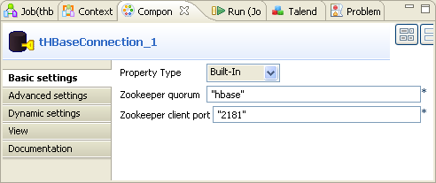
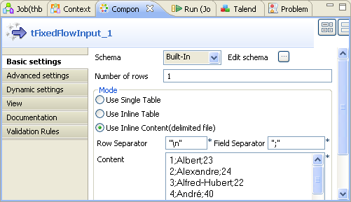
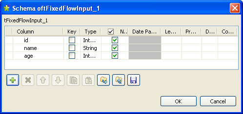
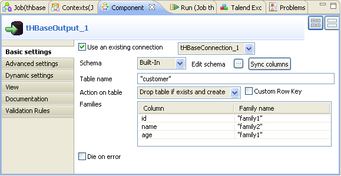
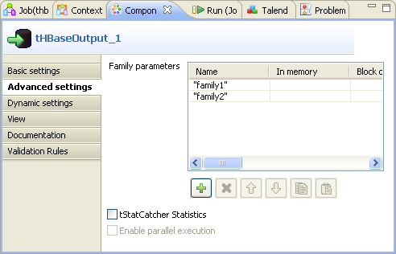
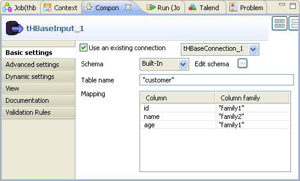
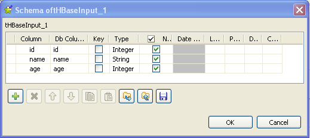
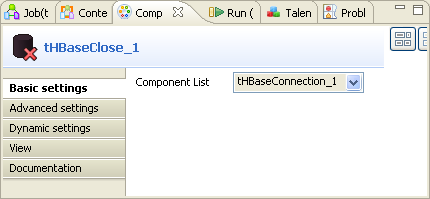

![[Warning]](../images/warning.png) | |
This component will be available in the Palette of the studio on the condition that you have subscribed to the relevant edition of Talend Enterprise Data Integration Big Data edition . |
|
Component family |
Databases/HBase | ||||
|
Function |
tHBaseInput reads the corresponding database and extracts fields of selection. | ||||
|
Purpose |
tHBaseInput extracts columns corresponding to schema definition. Then it passes these columns to the next component via a Main row link. | ||||
|
Basic settings |
Property type |
Either Built-in or Repository. - Built-in : No property data stored centrally. - Repository : Select the repository file in which the properties are stored. The fields that follow are completed automatically using the data retrieved. | |||
|
|
|
Click this icon to open a database connection wizard and store the database connection parameters you set in the component Basic settings view. For more information about setting up and storing database connection parameters, see Talend Enterprise Studio User Guide. | |||
|
|
Use an existing connection |
Select this check box and select the appropriate tHBaseConnection component from the Component list if you want to re-use the connection parameters that you have already defined. | |||
|
|
Zookeeper quorum | Type in the name or the URL of the Zookeeper service you use to coordinate the transaction between Talend and HBase. | |||
|
|
Zookeeper client port |
Type in the number of the client listening port of the Zookeeper service you are using. | |||
|
|
Schema and Edit schema |
A schema is a row description, i.e., it defines the number of fields to be processed and passed on to the next component. The schema is either Built-in or stored remotely in the Repository.
| |||
|
|
|
Built-in: The schema is created and stored locally for this component only. Related topic: see Talend Enterprise Studio User Guide. | |||
|
|
|
Repository: The schema already exists and is stored in the Repository, hence can be reused. Related topic: see Talend Enterprise Studio User Guide. | |||
| Table name | Type in the name of the HBase table from which you need to extract columns. | ||||
| Mapping | Complete this table to specify the column or columns to be extracted and the corresponding column family or families. The Column column of this table is automatically filled once you have defined the schema. | ||||
|
Advanced settings |
tStat Catcher Statistics |
Select this check box to collect log data at the component level. | |||
| Properties |
If you need to use custom configuration for your HBase, complete this table with the property or properties to be customized. Then at runtime, the customized property or properties will override those corresponding ones defined earlier for your HBase. For example, you need to define the value of the dfs.replication property as 1 for the HBase configuration. Then you need to add one row to this table using the plus button and type in the name and the value of this property in this row.
| ||||
|
Usage |
This component is a start component of a Job and always needs an output link. | ||||
In this scenario, a six-component Job is used to exchange customer data with a given HBase.
The six components are:
tHBaseConnection: creates a connection to your HBase database.
tFixedFlowInput: creates the data to be written into your HBase. In the real use case, this component could be replaced by the other input components like tFileInputDelimited.
tHBaseOutput: writes the data it receives from the preceding component into your HBase.
tHBaseInput: extracts the columns of interest from your HBase.
tLogRow: presents the execution result.
tHBaseClose: closes the transaction.
To replicate this scenario, proceed as the following sections illustrate.
![[Note]](../images/note.png) | |
Before starting the replication, your Hbase and Zookeeper service should have been correctly installed and well configured. This scenario explains only how to use Talend solution to make data transaction with a given HBase. |
To do this, proceed as follows:
Drop tHBaseConnection, tFixedFlowInput, tHBaseOutput, tHBaseInput, tLogRow and tHBaseClose from Palette onto the Design workspace.
Right-click tHBaseConnection to open its contextual menu and select the Trigger > On Subjob Ok link from this menu to connect this component to tFixedFlowInput.
Do the same to create the OnSubjobOk link from tFixedFlowInput to tHBaseInput and then to tHBaseClose.
Right-click tFixedFlowInput and select the Row > Main link to connect this component to tHBaseOutput.
Do the same to create the Main link from tHBaseInput to tLogrow.
The components to be used in this scenario are all placed and linked. Then you need continue to configure them sucessively.
To configure the connection to your Zookeeper service and thus to the HBase of interest, proceed as follows:
On the Design workspace of your Studio, double-click the tHBaseConnection component to open its Component view.
In the Zookeeper quorum field, type in the name or the URL of the Zookeeper service you are using. In this example, the name of the service in use is hbase.
In the Zookeeper client port field, type in the number of client listening port. In this example, it is 2181.
To do this, proceed as follows:
On the Design workspace, double-click the tFixedFlowInput component to open its Component view.
In this view, click the three-dot button next to Edit schema to open the schema editor.
Click the plus button three times to add three rows and in the Column column, rename the three rows respectively as: id, name and age.
In the Type column, click each of these rows and from the drop-down list, select the data type of every row. In this scenario, they are Integer for id and age, String for name.
Click OK to validate these changes and accept the propagation prompted by the pop-up dialog box.
In the Mode area, select the Use Inline Content (delimited file) to display the fields for editing.
In the Content field, type in the delimited data to be written into the HBase, separated with the semicolon "
;". In this example, they are:1;Albert;23 2;Alexandre;24 3;Alfred-Hubert;22 4;André;40 5;Didier;28 6;Anthony;35 7;Artus;32 8;Benoît;56 9;Catherine;34 10;Charles;21 11;Christophe;36 12;Christian;67 13;Clément ;64 14;Danniel;54 15;Elisabeth;58 16;Emile;32 17;Gregory;30Double-click tHBaseOutput to open its Component view.
If this component does not have the same schema of the preceding component, a warning icon appears. In this case, click the Sync columns button to retrieve the schema from the preceding one and once done, the warning icon disappears.
Select the Use an existing connection check box and then select the connection you have configured earlier. In this example, it is tHBaseConnection_1.
In the Table name field, type in the name of the table to be created in the HBase. In this example, it is customer.
In the Action on table field, select the action of interest from the drop-down list. In this scenario, select Drop table if exists and create. This way, if a table named customer exists already in the HBase, it will be disabled and deleted before creating this current table.
Click the Advanced settings tab to open the corresponding view.
In the Family parameters table, add two rows by clicking the plus button, rename them as family1 and family2 respectively and then leave the other columns empty. These two column families will be created in the HBase using the default family performance options.
The Family parameters table is available only when the action you have selected in the Action on table field is to create a table in HBase. For further information about this Family parameters table, see the section called “tHBaseOutput”.
In the Families table of the Basic settings view, enter the family names in the Family name column, each corresponding to the column this family contains. In this example, the id and the age columns belong to family1 and the name column to family2.
These column families should already exist in the HBase to be connected to; if not, you need to define them in the Family parameters table of the Advanced settings view for creating them at runtime.
To do this, perform the following operations:
Double-click tHBaseInput to open its Component view.
Select the Use an existing connection check box and then select the connection you have configured earlier. In this example, it is tHBaseConnection_1.
Click the three-dot button next to Edit schema to open the schema editor.
Click the plus button three times to add three rows and rename them as id, name and age respectively in the Column column. This means that you extract these three columns from the HBase.
Select the types for each of the three columns. In this example, Integer for id and age, String for name.
Click OK to validate these changes and accept the propagation prompted by the pop-up dialog box.
In the Table name field, type in the table from which you extract the columns of interest. In this scenario, the table is customer.
In the Mapping table, the Column column has been already filled automatically since the schema was defined, so simply enter the name of every family in the Column family column, each corresponding to the column it contains.
Double-click tHBaseClose to open its Component view.
In the Component List field, select the connection you need to close. In this example, this connection is tHBaseConnection_1.
To execute this Job, press F6.
Once done, the Run view is opened automatically, where you can check the execution result.
These columns of interest are extracted and you can process them according to your needs.
Login to your HBase database, you can check the customer table this Job has created.